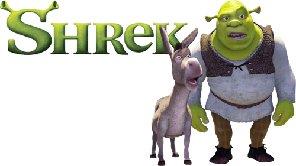

Início
Filmes
Vozes
Shrek é um filme norte-americano de 2001 de animação computadorizada dos gêneros fantasia e comédia produzido pela PDI/DreamWorks, lançado pela DreamWorks Pictures e dirigido por Andrew Adamson e Vicky Jenson.
Copyright Carlos Tojal
Shrek is too heavy so we couldn't load him.